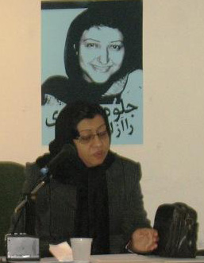
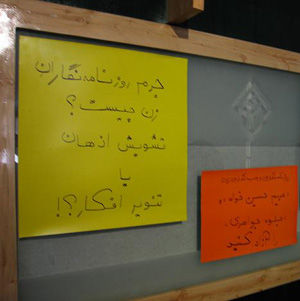

پذيرش > تریبون > مقالات > رویه اصلاحی پیامبر در مورد قوانین مربوط به زنان رویه ای صحیح برای برخورد با خواسته (...)
 متن سخنرانی پروین بختیارنژاد در نشست اعتراضی در انجمن صنفی مطبوعات متن سخنرانی پروین بختیارنژاد در نشست اعتراضی در انجمن صنفی مطبوعات

 رویه اصلاحی پیامبر در مورد قوانین مربوط به زنان رویه ای صحیح برای برخورد با خواسته تغییر است رویه اصلاحی پیامبر در مورد قوانین مربوط به زنان رویه ای صحیح برای برخورد با خواسته تغییر است
25 آذر 1386 - - نسخه قابل چاپ
خواسته تغییر همواره با مخالفت هایی از طرف آنان که تغییرات آنها را به وحشت می اندازد، وجود دارد. تغییر در هیچ حوزه ای را نمی توان به یاد آورد، بدون آنکه ما را به یاد مخالفتها بیندازد.

و در مقابل پافشاری عده ای بر نگه داشتن وضع موجود، تلاش، فداکاری و از خودگذشتگی عده ای چون مریم حسین خواه و جلوه جواهری است که راه را برای افق های روشنتر که فقط با تغییر در وضع موجود اتفاق می افتد باز می کند.
اما براستی عزم تغییر با حافظان وضع موجود چه می کند که نابه هنگام و سراسیمه دست بکار می شوند و با گشودن درهای زندان به سوی زنان و دختران جوان ما از شر هر نوع تغییر و تحولی خود را آسوده می کنند.
البته تغییرات باورهای ما را نشانه می گیرد و تغییر باورها و نشاندن باورهای جدید به جای باورهای کهن کاری است بس دشوار. و زنان چه می خواهند و ما چه می خواهیم و خواهان چه تغییراتی هستیم؟ تغییر برای برابری، البته صد سال است که زنان ایرانی برای برابری در حقوق و نیز هر آنچه که زیست انسانی انسانها را اعم از زن و مرد را مهیا می کند، تلاش می کنند.

تلاش زنان در عصر مشروطیت برای تحصیل، برای حضور زنان در عرصه سیاست، فرهنگ و تلاش برای کسب تحصیلات عالیه. زنان ما طی یک قرن کوشش، خواسته برابری داشتند و دارند و انگار این صدا، این اعتراض و تلاش پی گیر تازه به گوش مردان رسیده است.
اما شاید جالب باشد که بدانیم نزدیک به 1400 سال پیش نیز زمانی که پیام توحید و عدالت خواهی محمد در سراسر مکه و مدینه پخش شد، اولین اعتراض مدنی توسط زنان مسلمان صورت گرفت. آنها در اعتراض به محمد گفتند: چرا در قرآن فقط از مردان یاد شده و از زنان ذکری به میان نیامده (تفسیر طبری جلد 22، ص 10).
وحی آمد: بی گمان مردان و زنان مسلمان، مردان و زنان مؤمن، مردان و زنان فرمانبردار و مردان و زنان درستکار و مردان و زنان شکیبا، مردان و زنان فروتن، مردان و زنان صدقه بخش و مردان و زنان روزه دار و مردان و زنان پاکدامن، مردان و زنانی که خداوند را بسیار یاد می کنند، خداوند برای همه آنها آمرزش و پاداش بزرگ آماده ساخته است.
بار دیگر عده ای از زنان نزد زنان پیامبر می روند و به آنها می گویند: خداوند فقط نام شما را در قرآن آورده ولی هیچ گونه اسمی از ما نیاورده است، آیا در باره ما هیچ چیزی وجود ندارد که شایسته گفتن باشد؟ در جواب آنها سوره نسا نازل شد که در بر دارنده قوانین جدید ارث بود. (طبری، ج 8، ص 107)
مخالفت مردان آغاز می شود اما علیرغم آن مخالفت ها حق ارث برای زنان به ثبت می رسد.
شکایت های متعدد که هر یک حکایت از خشونت های خانگی داشت روانه خانه پیامبر می شود و پیامبر جز دفاع از زنان کار دیگری نکرد.
پس می بینیند که زنان برای کسب حقوق برابر سالیان درازی است که در تلاش اند و اینک نیز در مورد بسیاری از قوانین مربوط به زنان و کودکان، به برخی شیوه های مجازات، اعتراض داریم، اعتراضی مدنی.
علیرغم اظهارات متعدد برخی مجتهدین چون آیت الله منتظری، صانعی، موسوی بجنوردی، محقق داماد و مهریزی، ما خواهان لغو مجازات سنگسار هستیم، آیت الله موسوی بجنوردی تعدد زوجات را برخلاف عدالت اجتماعی می خواند و بسیاری از حقوق دانانی که یک پا در حوزه و یک پای دیگر در دانشگاه دارند بارها تأکید کرده اند ازدواج یک توافق دوطرفه و فسخ آن نیز با توافق دو طرف باید انجام شود.
حضانت کودکان، سن بلوغ دختران، ارث برابر، دیه برابر، منع خشونت جنسی در خانواده ها، همه این موارد می تواند در فضایی آرام و بدون تعصب و با حضور نمایندگان جنبش زنان و نیز سایر جریانات سیاسی فرهنگی و نیز با حضور جریان سنتی می تواند به بحث و گفتگو گذاشته شود.
در نتیجه با بازداشت چند زن مشکلی از مشکلات عدیده شما حل نخواهد شد. شاید بهتر باشد که به درک منطق تغییرات فرهنگی و اجتماعی در حوزه زنان همت کنید تا شاید این فهم شما را به برخورد صحیح با تغییرات مختلف در خصوص زنان رهنمون سازد. همانطور که پیامبر در 1400 سال پیش در مورد قوانین مربوط به زنان رویه ای اصلاحی در پیش گرفت.
ارسال به
بالاترین
،
توییتر
،
فریندفید
،
فیسبوک
در همين بخش :
 دهمین دورۀ مراسم تندیس صدیقه دولت آبادی ۱۳۹۲ دهمین دورۀ مراسم تندیس صدیقه دولت آبادی ۱۳۹۲
کارت پستالهایی به بهانهی هشت مارس و به یاد همهی مبارزین راه برابری
بیانیه بیش از 350 تن از مدافعان حقوق زنان به مناسبت روز جهانی زن؛ زنان هر روز فرودستتر میشوند
لباسی که برای تن ما دوخته اند! /اعظم بهرامی
چالشها و چشمانداز فعالیت مدنی زنان
ديگر بخش ها :
طرح یک میلیون امضا
|
مقالات
|
سایت نوشته ها
|
اخبار
|
گزارش كمپين
|
گفت و گو
|
علیه سکوت
|
كوچه به كوچه
|
نامه های شما
|
گزارش ویژه
|
گفتگو با اعضا
|
ویژه سالگرد کمپین
|
تصویر برابری
|
دل آرام علی
|
تریبون
|
مقالات
|
تاریخ شفاهی
|
خارج از چارچوب
|
کتابخانه
|
درباره کمپین
|
کمپین در شهرها
|
کمپین در بند
|
صدای تغییر
|
ویژه 22 خرداد
|
لایحه حمایت از خانواده
|
گالری
|
عشا مومنی
|
امیر یعقوبعلی
|
خدیجه مقدم
|
راحله عسگری زاده و نسیم خسروی
|
پروین اردلان،جلوه جواهری، مریم حسین خواه، ناهید کشاورز
|
زینب پیغمبرزاده
|
سعیده امین، سارا ایمانیان، محبوبه حسین زاده، ناهید کشاورز و همایون نامی
|
احترام شادفر
|
نسیم سرابندی زاده،فاطمه دهدشتی
|
وبلاگ مهمان
|
پرونده خرم آباد
|
دستگیری ها
|
مریم مالک
|
پرستو اللهیاری
|
مهرنوش اعتمادی
|
سمیه رشیدی
|
Other Languages
|
همراهان
|
«فراخوان کمپین ده روز با بهاره هدایت»
| English
|